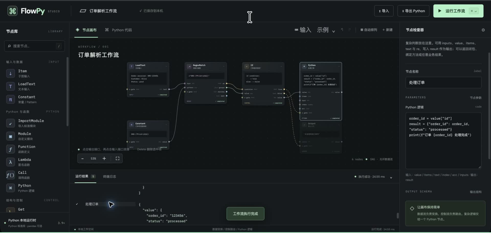

text→RegexMatch→dict
数据流，负责变换
字符串、列表、字典和函数都可以流动。正则输出结构化结果，让每条连线都有明确含义。
从一个节点，到一段完整逻辑。
把数据连起来，让代码跑起来。

▷ 看这个流程如何从零搭建 03:01节点图负责连接。复杂判断留在代码中。
从基础语法到函数、模块与文件，沿用熟悉的 Python。
字符串、列表、字典和函数都可以流动。正则输出结构化结果，让每条连线都有明确含义。
If、Switch、Map、Filter 与 Loop 各司其职。循环体可以收进子图，画布保持清晰。
原生函数、匿名函数、灵活参数与模块化。图可以导出独立 Python，也可以导入代码继续工作。
克隆项目，启动本地服务，打开浏览器。
核心执行环境只需要 Python 标准库。
基础 pandas 范例可以按需安装依赖。
git clone https://github.com/bennix/FlowPy.git
cd FlowPy
python3 -m venv .venv
.venv/bin/python -m pip install -r requirements.txt
./start.shgit clone https://github.com/bennix/FlowPy.git
cd FlowPy
py -m venv .venv
.venv\Scripts\python -m pip install -r requirements.txt
.venv\Scripts\python server.py本页面展示产品与教程。Python 工作流在你自己的电脑上运行。
未修改的导出 Python 可无损还原流程图；其他 Python 代码保留为完整逻辑节点。调试支持节点结果、日志、异常与断言。工作流以本机权限执行，请运行可信代码。
查看测试报告 ↗